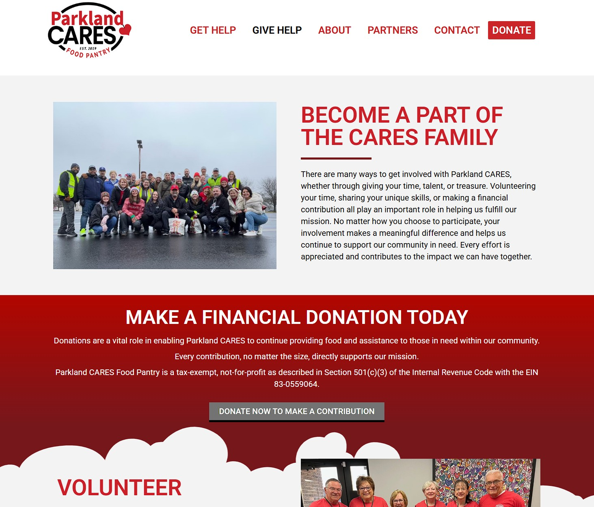

Morgan Smith
Education
Columbia University, New York — Full Stack Web Development
MAY 2019 - NOVEMBER 2019
An intensive, fast-paced 24-week long program dedicated to designing and building web applications. Skills learned consisted of HTML5, CSS3, Bootstrap, Ruby, Ruby on Rails, Postgresql, JavaScript, JQuery, and ReactJS. Implementation of Adobe Suites.
Experience
Acuity Brands, Remote — Web Content Editor II
July 2024 - Current
- Lead a Sitecore cleanup project: ensuring the content tree was up-to-date, only necessary components were on each page and in presentation details
- Managed and updated 15+ brand sites through ticket and project requests, communicating daily with stakeholders; built, edited and redirected brand pages daily
- Worked in Ceros to design more dynamic components; used Azure to link assets in Sitecore
- Ran site audits to determine analytics goals
Comcast Residential, Remote — Web Content Specialist
November 2023 - Current
- Built and published web pages for Comcast Residential (based on a projected five-year content migration project)
- Built components for a campaign that lead to 50% increase in sales across six divisions
- Trained team members in Sitecore through team meetings and by creating How-To documents
- Lead a Quality Control team for web pages as well as articles in Right Answer
- Documented status of each project, communicated with team members frequently to ensure synchronicity and timeline efficiency
- Preformed daily troubleshooting and edited content according to company guidelines
- Collaborated with QA, copy, design, development, marketing, and legal to ensure all updates were rendering accurately and with engaging content
- Effectively organized and maintained a sustainable workflow to ensure all projects were submitted within the delivery window, frequently administering 10+ projects simultaneously
Xfinity, Remote — Manager (Web Analytics)
August 2023 - November 2023 (Contract Based - Remote)
- Created reports on key metrics, analyzed and interpreted trends and provided insight based on current data in Adobe Analytics and Google Search Console
- Brainstormed ways to improve overall site traffic, frequently collaborating with SEO and Copy teams. Created roadmaps for new projects.
Frelance projects
